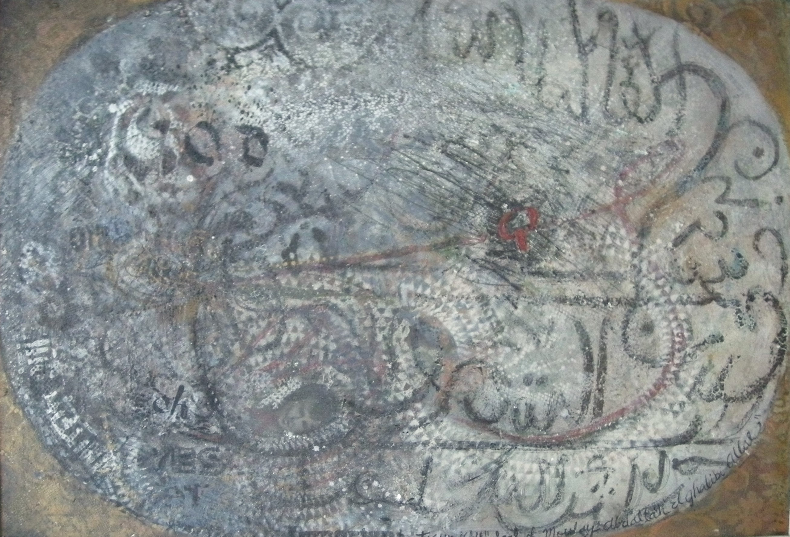

Tosun Bayrak
1926–2018
Artist Biography
Tosun Bayrak was born in Istanbul and initially studied sciences there before moving on to study art, architecture and art history in the studios of Fernand Leger and Andre Lhote in Paris, the University of California, Berkeley and Rutgers University in the United States and the Courtauld Institute of Art in London. From 1949 Bayrak spent a decade in Casablanca, Morocco where he was Turkish honorary consul, painting and also running a business. He then returned to the United States to establish an art department at Fairleigh Dickinson University in New Jersey. Initially heavily influenced by Abstract Expressionism, Bayrak won a Guggenheim scholarship in 1965 and had many successful exhibitions in the States but later in the1960s he began sculpting using human flesh, blood and body parts in protest at the Vietnam war. He also staged ‘events’ involving gore and violence and he became known as a founder of ‘Shock Art’. Always a thoughtful man, Bayrak in the 1970s turned his back on art to devote himself to learning about Islam and Sufism, where he became renowned for his translations, books and teachings. Istanbul Museum of Graphic Arts holds his work. A major retrospective, Fasa Fiso, was held in 2016 at the Mili Re Art Gallery in Istanbul.

Seal of Moulay Abdallah el ghalibi allah, 1964